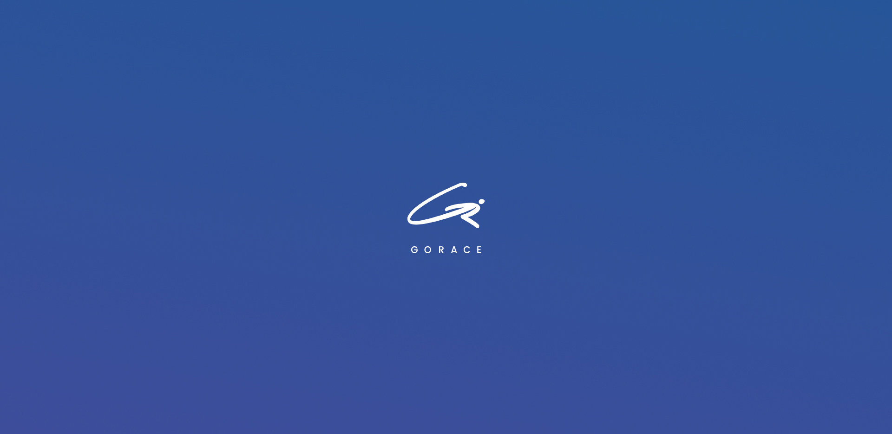
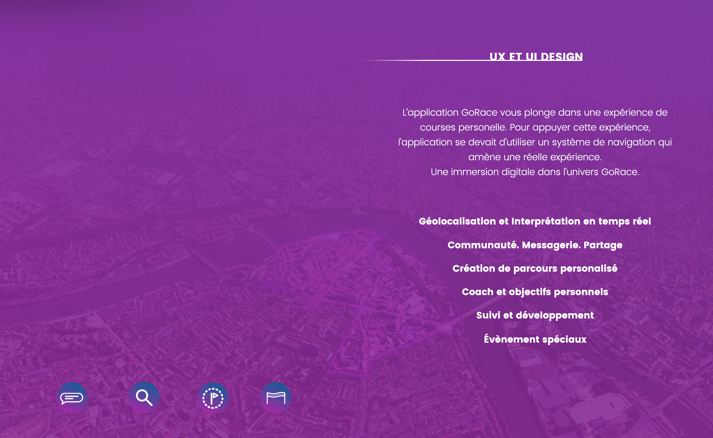
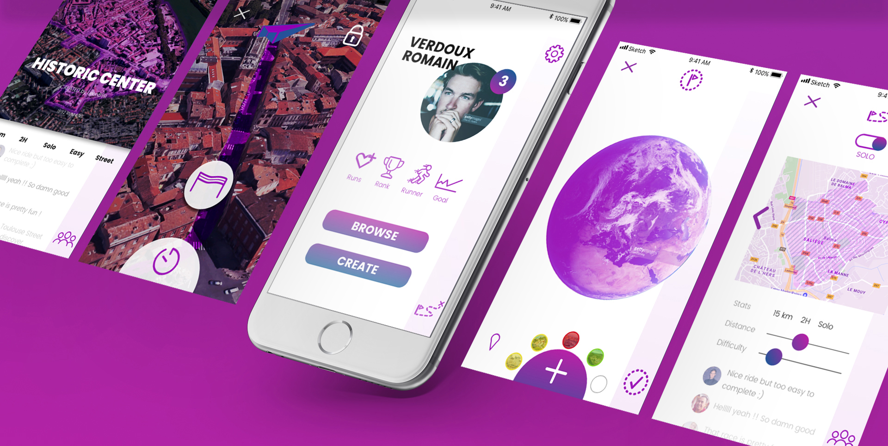
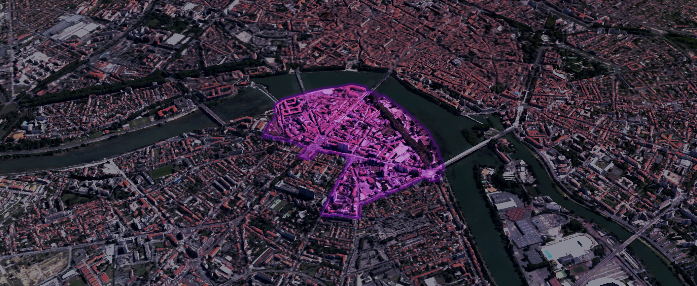
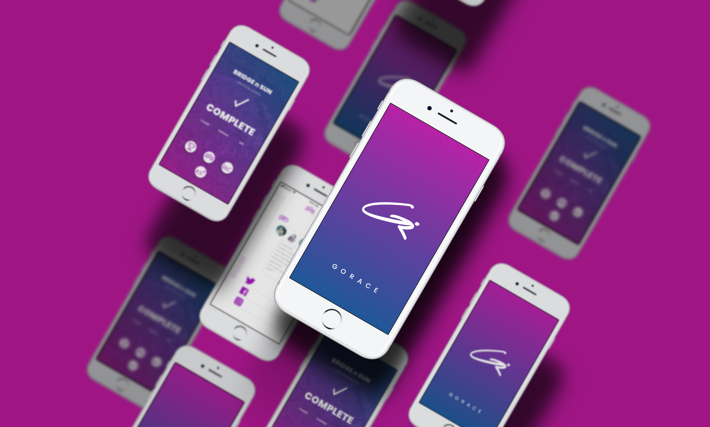

GoRace
UX/UI Design, A.D
La vague, très populaire, d'applications liées au sport et plus précisément à la course a fait émerger une nouvelle manière de prendre soin de soit tout en s'amusant. Une nouvelle demande de sportif allant du runner occasionnel au runner très régulier. GoRace prend ce chemin en proposant une spécialisation autour de la course d'orientation urbaine et en nature. L'application propose de découvrir nos environnemens d'un nouvel oeil et d'appréhender la course running d'une nouvelle manière.
C’est en partant de ce concept que nous avons développé un expérience utilisateur immersive pour faire de GoRace plus qu'une simple application de course mais une réelle aventure sportive personelle.
GoRace devient l'outil de la découverte de son environnement proche grâce à l'immersion dans la course. Utilisant les sens, le runner se déplace et valide chaque passage de checkpoint grâce à une photo, un enregistrement de son, etc. L'objectif étant de permettre une utilisation simple, intuitive et réactive à la course tout en créant un univers favorisant l'immersion dans l'aventure GoRace. De plus l'application est destinée à être utilisée comme un véritable réseau social, permettant, grâce à la création d'un profil, de créer des courses, de recevoir des conseils personnalisés d'un coach virtuel, de défier ses amis, de noter ou commenter ou encore de déterminer ses propre objectifs et de suivre sa progression.




